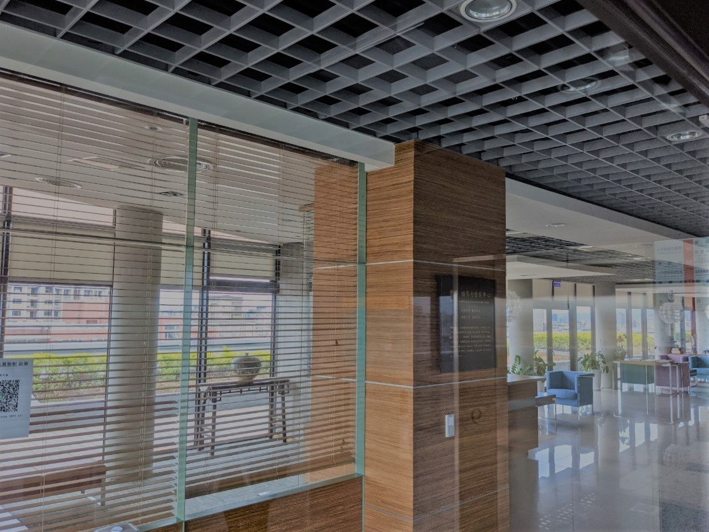
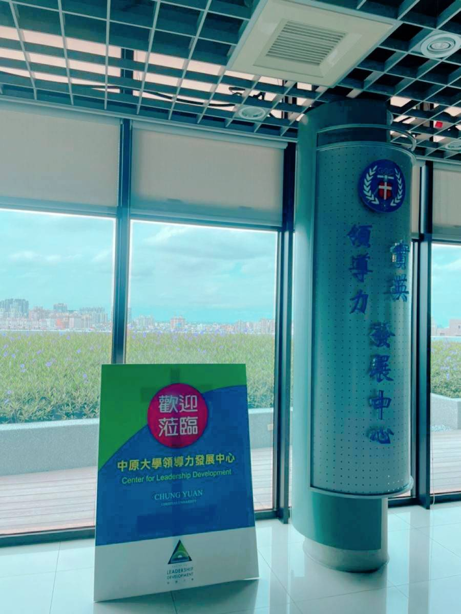

中原大學－領導力發展中心｜成立宗旨
「中原大學科學與人文教育發展中心」之成立目的，在於提供本校與區域高中、職之間能有持續且穩定交流的平台。
並藉由實務的合作，來提升彼此伙伴學校間的師、生學習知能，以達到「優質化高中，高品質大學」的互惠合作。


領導力發展中心－領導創新與博雅學程
一、理念：當今領導者最重要的能力，就是以正確的價值觀及創新的方法來解決複雜的決策問題。
二、方法：
1.個別指導：強調以成果導向為主的學習方式，提供學員個別指導及實務經驗，在一個豐富及強調合作的學習環境中，學員能從具有學術聲望及實戰經驗的師資群及同學身上獲得專業知識與經驗。
2.互動式學習：經由教授指導與同儕回饋，營造精確自我分析的學習氣氛，學程能使學員更進一步了解工作最艱鉅的挑戰，並提升解決問題之信心與能力。
三、教學特色：
1.創新與開創：結合了學術理論及精準的研究數據，這個結合能使學員挑戰傳統思維、掌握機會、在解決複雜的問題之過程中展現領導者的勇氣與創意。
2.人文博雅：在大師們的專業與熱情影響下，學員能懂得欣賞文學、藝術及音樂，我們相信這種對人文的欣賞能力，能改變學員對環境、生命和事業的觀點，從而成為具有博雅素養的領導者。
3.領導能力行動計畫：由學員和指導教授於第一年就讀期間，經過討論而量身打造的。以每個學員的事業規劃及人生目標為基礎，所設計的方案能帶領學員在走出教室後，學習如何在現實世界中成為一名卓越的領導人。
也將幫助學員深入了解在面對矛盾的訊息、複雜的政治環境及時間和財務的壓力下，如何運用「領導與合作」、「權利與責任」、「倫理與政治家風度」來領導一個組織。
EMBA學程
一、簡介：
當今器需要快速融未來的人才，其特質含創新的思維、創造價值的自我學習方式與熱愛工作的激情與好奇心。 此學程提供倫理和實務兼具的課程，培養學員從繁瑣無序的資訊中，建立抽象觀點的能力。
二、課程規劃：
1.五大主軸課程：了解自我、挑戰未來的創新思維、 工業4.0時代的挑戰、全球金融形式、生產力4.0中小企業大聯盟
2.三大模組課程：基礎專業模組、、創新特色模組、專題講座模組